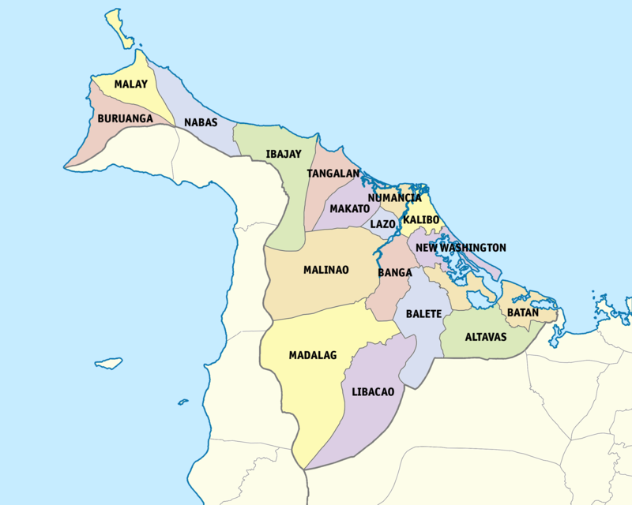

Aklan
The Oldest Province in the Philippines
Home to the Boracay Island

What is Aklan?
Aklan is a coastal province found in the Region VI or the Western Visayas region. Most of the province is situated
on the northeastern portion of the island of Panay and the rest are on islands such as Boracay. The province is
also mountainous, especially on its western portion. The province is bordered by the provinces of Capiz and Antique on the south,
and the Sibuyan Sea in the north. The five main rivers (Aklan, Ibajay, Tangalan, Jalo, and Talon) of the province flow to the Sibuyan Sea.
Its capital is Kalibo, where the famous Ati-Atihan Festival is celebrated in honor of the Santo Niño.
The province is also rich in flora and fauna that are endemic to the Philippines such as the Philippine spotted deer and the Visayan hornbill. The people of the province mostly speaks the Aklanon language. The Ati people also live in the mountains of the province. The name of the province came from the Aklanon word "akean" which means "where there is boiling". The province is also notable by its famous dishes such as chicken inubaran and binakol.
Aside from Boracay, here are the top spots in the province of Aklan:
The province is also rich in flora and fauna that are endemic to the Philippines such as the Philippine spotted deer and the Visayan hornbill. The people of the province mostly speaks the Aklanon language. The Ati people also live in the mountains of the province. The name of the province came from the Aklanon word "akean" which means "where there is boiling". The province is also notable by its famous dishes such as chicken inubaran and binakol.
Aside from Boracay, here are the top spots in the province of Aklan:
- Ati-Atihan Festival
- Museo It Akean
- Hinugtan Beach
- Nabas Wind Farm
- Bakhawan Eco-Park
- Naasug Point
- Nagata Falls
References
- https://en.wikipedia.org/wiki/Aklan
- https://www.facebook.com/watch/?v=332305454555853
- https://www.vigattintourism.com/tourism/articles/Jawili-Falls-Realism-of-Mother-Natures-Work-of-Art
- https://danielsecotravels.com/aklan-tourist-spots/
- https://commons.wikimedia.org/wiki/File:Ati_woman.jpg
- https://ph.hotels.com/go/philippines/boracay-island
- https://primer.com.ph/tips-guides/2015/01/18/ati-atihan-2015/
- https://aklan.gov.ph/